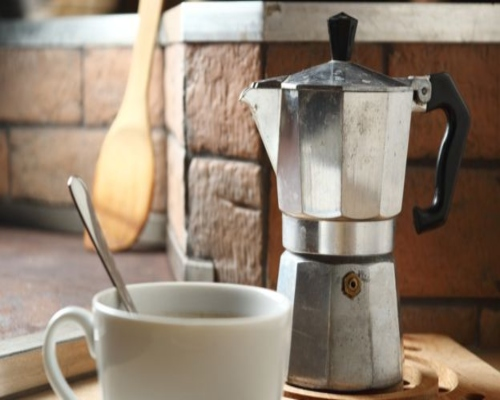
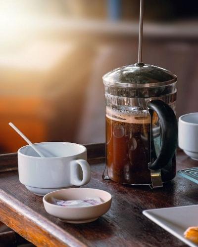
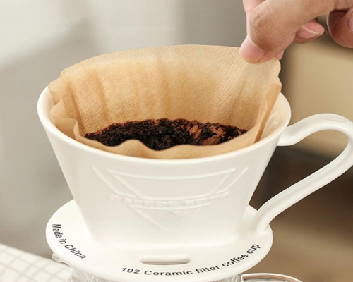

Cafetera italiana (moka)
Tiempo de infusión: hasta que el café comience a fluir en la parte superior de la cafetera.
Pros y contras: es un método práctico, ya que evita gastos con filtros y hay modelos de diferentes tamaños. Pero pueden cometerse errores que acaban quemando el café.

Prensa francesa
Tiempo de infusión: 1 a 2 minutos antes de bajar el émbolo. Cuanto mayor sea el tiempo de infusión, el café tendrá más cafeína, pues se trata de un compuesto soluble en agua. Y también será más amargo, ya que la cafeína es amarga.
Pros y contras: lavado fácil. Al igual que en el caso de la cafetera italiana, es un método práctico y pueden utilizarse diferentes tamaños.

Colador de papel
Tiempo de infusión: 3 a 4 minutos.
Pros y contras: el filtro descartable es más higiénico, pero puede dejar sabor de papel en la bebida. Para evitar eso, una sugerencia: pasar un poco de agua caliente en el filtro antes de verter el polvo.

Colador de paño
Tiempo de infusión: 3 a 4 minutos.
Pros y contras: método nostálgico, que suele llenar el ambiente de aromas. Existe el problema de cómo limpiar correctamente el colador, ya que los residuos se acumulan y pueden pasar al siguiente preparado.